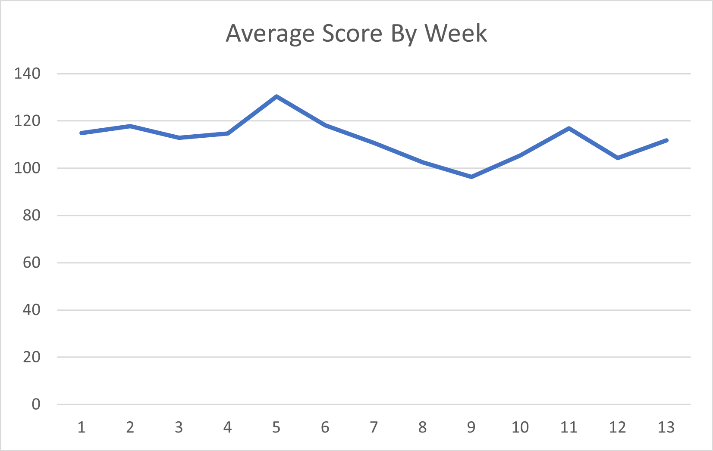
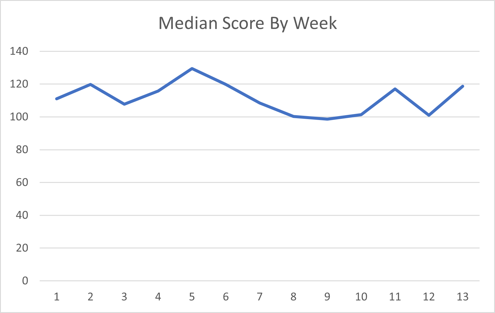
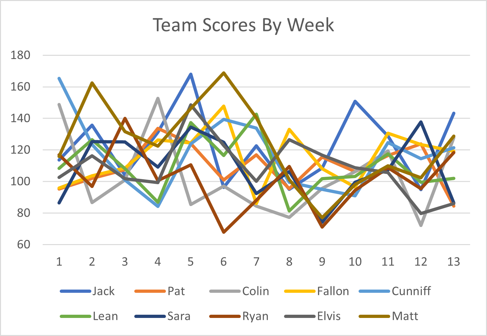

Washed Up Greyhounds Weekly Roundup
Week 13
Today, we open our recap with a moment of reflection. It's that time of the year where the fabled "Playoff Chance" column has finally fallen to 0 for a few of our brethren. There will be no making fun of anyone. No gloating, no raging, no "I told you so"'s. Only a somber moment to appreciate those we have lost. Let us pray:
In Memoriam
Wharf Rat Owner
Patrick Auth
5-8
We are gonna miss you buddy.
Wandisimo
Colin Burke
4-9
I guess you could say he ruh'ed his last roh.
Joe Biden's Speechwriter
Ryan Luca
3-10
If only you were better at writing speeches :(.
Rest in Peace, brethren.
The Side of the Living
And then there were 7. What a ragtag groups of silly little people we have here. Next week, we'll be down to 6. I'll pretend that it's not incredibly obvious who the next person to die is by saying it's really anyone's game still. Let's see what's up:
Wuhan Bats
Jawn Lunch
10-3
The chances of him NOT getting first are slim... but never - What's that? They are 0? Shit.
COOKing Dinner
Andrew Fallus
7-6
I was going to say maybe you woulda won if you didn't start Henderson, but your entire bench combined also put up 0.
Boston Weathermen
Matthew James Cunniff
8-5
If you finish with a better record than me I will cry.
female playing
Colleen "Lean" McCormack and Will "Willean" McCormack
6-7
Making playoffs is easy! You just have to do is win, outscore Elvis by 50, and hope that he loses to... Scrub Daddy. Oh no. You're doomed.
Pelosi's Beefcurtains
Sara Aloupis and Sara Aloupis' Fantasy Slave
7-6
Turns out Sara never owned a team and it was Skankhunt42 trolling the whole time.
Earl Thomas' Brother
Elvis Smuth
7-6
Wockie Slush.
Scrub Daddy
Matt Kinny
8-5
Holy shit I actually won a game.
I really don't want to write this roundup fml.
Please Don't Touch My Graff
  I don't even look at these so idk why I expect anyone else to.
I'm retiring a few sections to revisit them in the Year End Review so things aren't immediately spoiled. Also I'm lazy.
You Got "Lucky"
This section is just okay.
| Team | Hypothetical Record | Hypothetical Standing |
|---|---|---|
| Wuhan Bats | 75-42 | 2nd |
| Whart Rat Owner | 58-59 | 6th |
| Wandisimo | 38-79 | T-9th |
| COOKing Dinner | 63-54 | T-4th |
| Boston Weathermen | 57-60 | T-7th |
| female playing | 57-60 | T-7th |
| Pelosi's Beefcurtains | 63-54 | T-4th |
| Joe Biden's Speechwriter | 39-78 | T-9th |
| Earl Thomas' Brother | 64-53 | 3rd |
| Scrub Daddy | 79-38 | 1st |
Takeway time! Here we go:
This week's unluckiest loser is of course someone who absolutely needs wins to stay in the playoff race, but got screwed by being matched against the highest scorer of the week, Wuhan Bats with 143.25 points. COOKing Dinner has the honor of holding this title, as his 4th highest score of 119.15 points just didn't cut it. Go cook some dinner and cry over it you nerd.
Also, in an absolute miracle game for Scrub Daddy, Joe Biden's Speechwriter was unfortunately made the week's SECOND unluckiest loser. With a solid 5th highest score of 118.3 points, he walked away with a fat L against the 2nd highest scoring Scrub Daddy with 128.7 points. Needs an absolute monster game next week as a last ditch effort to not get bottom of the barrel.
With high scoring players being matched up against high scoring players, the worst of the worst this week walked away with some pretty lucky wins. The luckiest had to have been female playing, and it came right when she needed it the most. Her 4th lowest score of 101.95 points was just enough to squeeze out a win against the 2nd lowest scorer Earl Thomas' Brother with 85.95 points. She was our luckiest winner last week, however, which just goes to show that life's a bitch.
The Fr. Linnane's Special Little Hound Award
Unfortunately for all of us, this week's Special Little Hound now moves into 1st place in the Special Little Hound Award winners standings, which was not official until just now when I decided it should be. With an impressive 143.25 points this late into the season, our winner solidifies both his spot at the top of the actual standings and these fake meaningless standings.
The Fr. Linanne's Special Little Hound of Week 10 is...
Wuhan Bats
Jawn Lunch
Congrats, you sucked the least!
A running tally of Fr. Linnane's Special Little Hound Award winners can be found here:
| Team | Special Little Hound Wins |
|---|---|
| Wuhan Bats | III |
| Pelosi's Beefcurtains | II |
| Scrub Daddy | II |
| Joe Biden's Speechwriter | I |
| Wandisimo | I |
| female playing | I |
| COOKing Dinner | I |
| Earl Thomas' Brother | I |
| Boston Weathermen | I |
The Lou of the Week Award
This one stings a little. Our Lou of the Week couldn't have been awarded to someone less deserving, but here we are. A team making a last second playoff push with all of his fans cheering him on comes out on the field and... take a big steamy shit right infront of everyone. Unfortunate stuff. With 84.5 points, our winner this week daggered himself out of a playoff spot and kept female playing's dreams alive. Ouch.
The Lou of the Week is...
Wharf Rat Owner
Pat Auth
Congrats, you suck!
A running tally of Lou of the Week winners can be found here:
| Team | Lou of the Week Wins |
|---|---|
| Wandisimo | IIIIII |
| Boston Weathermen | III |
| Joe Biden's Speechwriter | III |
| Pelosi's Beefcurtains | I |
| Wharf Rat Owner | I |
That's all folks. See you next week. PS I did 0 proofreading.
Archive
| Wk1 | Wk2 | Wk3 | Wk4 | Wk5 | Wk6 | Wk7 | Wk8 | Wk9 | Wk10 | Wk11 | Wk12 | Wk13 | Wk14 | Wk15 | Wk16 | Wk17 | Wk18 |
|---|